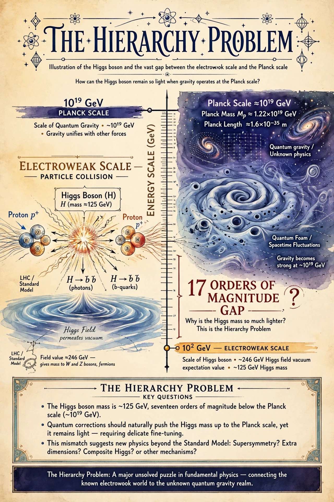

In theoretical physics, the hierarchy problem is the problem of why the weak force is so much stronger than gravity, or equivalently why the Higgs boson mass (about 125 GeV) is so much smaller than the Planck scale (about 1019 GeV) at which quantum gravity is expected to become important. Quantum corrections would naturally push the Higgs mass toward the highest scale unless cancellations occur to extraordinary precision — a fine-tuning that many physicists regard as unnatural.

Proposals include supersymmetry, which cancels corrections with superpartner particles; large or warped extra dimensions (ADD and Randall–Sundrum models), which lower the fundamental gravity scale; technicolor and composite Higgs models; and anthropic selection in a multiverse landscape. None has been confirmed experimentally; searches at the Large Hadron Collider have found no superpartners at expected masses, sharpening debate about naturalness.